Autor: Alex Guevara
Introducción
Esta técnica se empezó a usar en el 1996, y la crearon la gente de Id Software, aplicándola en el videojuego que en ese momento estaban creando, el conocido Quake. Desde entonces, es difícil encontrar un juego 3D que no use esta técnica o alguna variante. Las ventajas de su uso son muchas, desde su espectacularidad y bajo coste computacional, hasta su relativa sencillez de implementación. Tiene algunas desventajas, como su bajo nivel de detalle de las sombras, o que no son recomendables en escenarios exteriores, como veremos mas tarde.
¿En que consiste la técnica de los LightMaps?
Los lightmaps (mapas de luz) simplemente consisten en añadir una segunda textura a todas y cada una de las caras existentes en una escena 3D. Esta textura contendría la luz que recibe cada cara. Los lightmaps son precalculados, ya que si por un lado una vez creados son muy rápidos de mostrar, el coste de su creación es elevado.
Aquí tenemos un ejemplo de un lightmap:
|
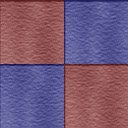 |
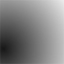 |
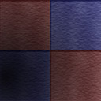 |
|
Textura inicial |
Lightmap |
Textura resultante |
Y unos ejemplos reales:
|
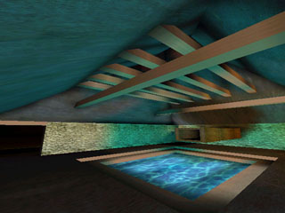 |
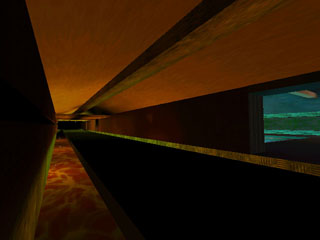 |
|
|
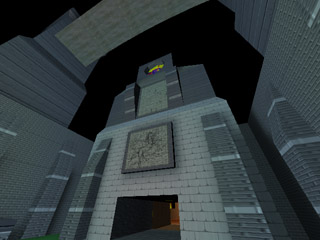 |

Es decir, si tenemos modelada una habitación, con sus respectivas 4 paredes, suelo y techo, aunque todas las caras tengan la misma textura, necesitaremos 6 texturas diferentes para la iluminación. Como podréis imaginar, esto supondrá una gran cantidad de texturas en una escena compleja, y por tanto, un gran consumo de memoria RAM. La única solución posible es crear LightMaps de baja resolución, es decir, de 32x32 píxels, por ejemplo.
|
|
|
|
Lightmap Ideal |
Lightmap de baja resolución |

Pasos previos
Antes de comenzar a calcular los Lightmaps, hay que tener en cuenta unas cuantas cosas. No sería óptimo calcular una textura para cada uno de los triángulos de la escena, hay que agrupar por superficies, de manera que aprovecharemos lo máximo posible la textura cuadrada. Si a cada triángulo le aplicamos una textura cuadrada, malgastaremos el 50% de la memoria en texturas que nunca se verán.
|
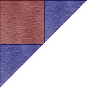 |
|
|
Aquí veis a lo que me refiero, sobra la mitad de la textura de luz. |
|
Por lo tanto, habrá que agrupar por superfícies. Yo recomiendo comenzar agrupando primero todos los triángulos que estén en el mismo plano, para luego separarlos según la superficie en que se encuentren.
|
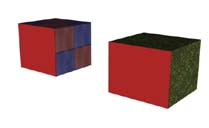 |
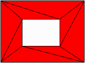 |
|
Las dos caras rojas forman parte del mismo plano, no obstante no forman parte de la misma superficie, habrá que separarlas en distintos grupos.
|
Habrá que tener en cuenta casos como éste al hacer el algoritmo, con un hueco en medio de la superficie. Ésta concretamente corresponde a una pared con una ventana, con la disposición de triángulos que típicamente crea el 3D Studio MAX al extruir una cara para hacerle un agujero. |
Además, habría que añadir alguna información extra a las superficies: posteriormente necesitaremos la normal del plano de la superficie, así como su ecuación que lo define:
Ax + By + Cz + D = 0
Recordad que A, B, C son las componentes de la normal del plano (necesitaremos que esté normalizada), y D es la distancia mínima del plano al centro de coordenadas, con el signo cambiado. Para encontrar D tendréis que hacer:
-
Coger un punto cualquiera del plano.
-
Hacer el producto escalar del punto con la normal del plano, e invertir el signo del resultado.
Unos pasos para implementar el algoritmo:
-
Agrupar todos los triángulos en planos, según la ecuación del plano Ax + By + Cz + D = 0
-
Una vez agrupados, coger uno de los triángulos del plano y, recursivamente, recorremos todos los triángulos que son colindantes con él, y 'marcamos' todos por los que pasamos. Una vez finalizado el recorrido, los no marcados forman parte de otro plano, creamos un plano nuevo y asignamos los triángulos a éste.
Creando las texturas de Lightmap
Antes de empezar con cálculos matemáticos, tendremos que crear las texturas en las cuales dibujaremos los resultados de los cálculos de iluminación. Supongamos que queremos que todas las texturas tengan una resolución de 32x32 píxels. Supongamos también, que usaremos luces de colores, no nos limitaremos al blanco y negro. Por lo tanto usaremos texturas de 24 bits (3 bytes). Por lo tanto una textura ocupará
32 · 32 · 3 = 3072 bytes
Ahora hemos asignado un espacio de 3072 bytes, donde cada 3 bytes es un píxel. Usamos el formato de color RGB, por lo que cada byte es un color. Hemos de inicializar toda la textura en negro, por lo tanto el valor de R, G y B será 0. Simplemente hemos de rellenar los 3072 bytes con ceros. Una vez rellenados, habrá que asignar una textura a cada una de las superfícies que tengamos.
Calculando las coordenadas U y V
Bien, ahora ya tenemos toda la geometría de la escena agrupada y preparada para empezar a calcular los mapas de luz. Tenemos una serie de grupos de triángulos que forman superficies planas. A cada grupo le asignaremos un lightmap, que agrupe a todos los triángulos que la formen.
|
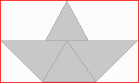 |
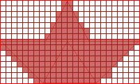 |
|
El lightmap, representado por el marco rojo, engloba a todo el grupo.
|
En rojo estarían los pixels del lightmap aprovechados. En este ejemplo vemos que en algunos casos agrupar no es lo más óptimo, pero en general si lo es. La mayor parte de las superficies, si hablamos de escenarios 3D, son suelos y paredes, en general rectángulos, con lo que aprovecharíamos el 100 por 100 del lightmap. |
A continuación tendremos que asignar una coordenada U y V a cada uno de los vértices de cada triángulo del grupo. Las coordenadas U y V se refieren a la posición X y Y de la imagen de la textura de luz. Es el equivalente de las coordenadas S y T de las texturas normales. Las coordenadas van del (0,0) (coordenada inferior izquierda de la textura) a la (1, 1) (coordenada superior derecha).
Esto sería muy fácil si la superficie fuera perpendicular a cualquiera de los ejes de coordenadas, pero normalmente no se dará este caso. Ante este caso usaremos la técnica más sencilla a tal efecto, llamada plannar mapping. Simplemente consiste en mirar cuál de las componentes de la normal de la superficie es mayor, la componente X, Y o Z. A continuación obtendremos las coordenadas U y V a partir de el plano perpendicular a la componente seleccionada. Explicado gráficamente:
|
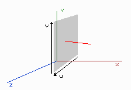 |
Coordenada X Predominante. El Plano perpendicular al eje X es el YZ. Obtendremos la información de U y V a traves de la Y y la Z. |
|
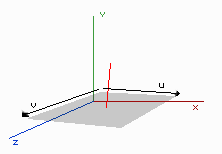 |
Coordenada Y Predominante |
|
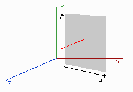 |
Coordenada Z Predominante |
En el peor de los casos, la normal ofrecerá un ángulo de 45º en algunas de sus componentes, y por lo tanto puede que no haya normal predominante. Entonces cogeremos cualquiera de ellas y aún y así, el resultado será bueno visualmente, no nos tendremos que preocupar por eso.
Pero aún no hemos acabado. Ahora cada coordenada U y V de cada vértice tiene la información de las coordenadas al plano perpendicular al cual lo hemos aproximado, y nosotros queremos coordenadas del (0,0) al (1,1). Esto se puede calcular rápidamente:
Definiremos Umin, Umax, Vmin y Vmax. Éstos vendrán determinados por el plano en el que estemos trabajando, habrá que tener las correspondencias de U y V con los ejes adecuados, tal como acabamos de explicar.
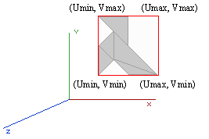
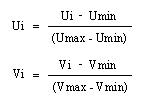
En este ejemplo podemos ver cómo Umin y Umax se refieren a las X, mientras que Vmin y Vmax se refieren a las Y (Domina el eje Z). Si dominara el eje X, Umax y Umin se referirian al eje Z, Vmax y Vmin al Y, etc, tal como hemos visto en la tabla anterior.
Calculando Lumels
Un lumel es el nombre que se le da a cada uno de los píxels de la textura del LightMap. El siguiente paso a seguir es calcular la posición exacta en el mundo 3D de cada uno de esos píxels. Ahora sólo tenemos el plano donde está situada esa textura. Necesitaremos crear una bounding box de toda la superficie. Una bounding box simplemente es una caja que engloba a toda la superficie, en este caso una caja 3D, como vemos en el ejemplo a continuación.
Para ello sólo hemos de buscar los máximos y mínimos de la X, Y y Z. Una vez calculada ya estamos en condiciones de calcular la posición de cada lumel de la futura textura. Primeramente creemos un vector 3D, donde cada una de sus componentes sea la longitud de cada eje de la Bounding Box que hemos creado:
Tendremos entonces el vector (OX, OY, OZ). Ahora tenemos un problema: la posición del lumel tiene dos componentes, U y V, mientras nosotros tenemos un vector en 3D. La solución será calcular las dos componentes que podamos, y luego usar la ecuación del plano para encontrar la restante. Si nuestro plano tiene la Z dominante, aproximaremos la U y la V con la X y la Y, del siguiente modo:
X = Xmin + (OX * U)
Y = Ymin + (OY * V)
Luego, si la ecuación del plano es
Ax + By + Cz + D = 0
nos falta la Z, por lo que la ecuacion para encontrarla seria
z = - (Ax + By + D) / C
Y ya tendremos la posición X, Y, Z de nuestro lumel.
Iluminando el Lumel
Esta es la parte mas simple del cálculo de Lightmaps. En este paso tendremos que ir calculando la luz que recibe cada lumel, y escribir esta información en la textura que previamente habíamos creado. Hay muchos sistemas de calcular la iluminación, la más simple es la fórmula de Lambert:
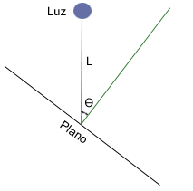

Donde I es el brillo de la luz, (de 0 a 1), y L es la distancia entre el lumel y la luz. Hay que tener en cuenta que trabajamos en RGB, por tanto habrá que realizar un cálculo por separado para cada color. Con esta formula tendremos una atenuación lineal, si queremos una atenuación cuadrática simplemente elevaremos L al cuadrado.
Más adelante veremos otros sistemas para iluminar, pero de momento usemos éste que es el más simple. En el apartado anterior habíamos calculado la posición 3D que ocupa nuestro lumel 2D. Usaremos la posición 3D para las ecuaciones de cálculo de luz, y la posición 2D para modificar la textura del Lightmap. Inicialmente esa textura era negra, por lo que tendremos que ir sumando en cada pixel el efecto de todas y cada una de las luces de la escena.
Añadiendo sombras
Para añadir sombras, tendremos que hacer unos cuantos cálculos extra antes de iluminar el lumel. Seguiremos los siguientes pasos:
-
Trazaremos un rayo (vector) desde la luz al lumel correspondiente.
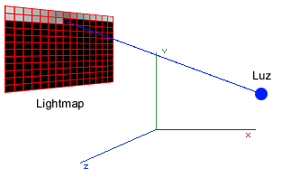 -
Comprobaremos si el vector colisiona con el plano de otra superficie. Colisionará seguro, a no ser que éste sea paralelo al plano. Habremos de comprobar también si colisiona en la dirección del vector o en el sentido contrario. Si es el último caso ignoraremos la colisión. Aquí tenéis las matemáticas necesarias para encontrar el punto:
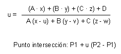
Donde:
A, B, C y D Son las componentes de la ecuación del plano Ax + By + Cz + D = 0
P1 es la posición del Lumel (x, y, z)
P2 es la posición de la Luz (u, v, w)
-
Una vez obtenido el punto del plano donde intersecta, comprobaremos si este punto está dentro de alguno de los triángulos que forman la superficie asociada al plano. Para saber si un punto está dentro de un triángulo habrá que seguir el siguiente proceso:
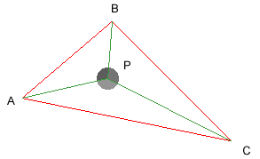 trazaremos 3 vectores, desde el cada uno de los vértices del triángulo hasta el punto P en cuestión. Si la suma de los ángulos entre estos vectores es 360 grados, quiere decir que el punto está dentro del triangulo.
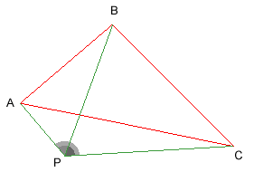 Si la suma de ángulos es inferior, quiere decir que está fuera del triangulo.
-
Si es así, ese rayo colisiona y no tendría que llegar al lumel, por tanto ignoramos este lumel y pasamos al siguiente. Si no colisiona, seguimos comprobando con otra superficie, hasta colisionar o comprobar toda las superficies.
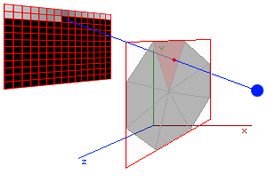
Antialiasing
Y llegamos al último paso. Ya tenemos todos los lightmaps calculados y listos para mostrar. No obstante, si los visualizáis ahora, pueden verse un poco bruscos, recordad que su resolución es baja, y generalmente se aplican en superficies grandes. Es recomendable suavizarlos, aplicándole un antialias. Simplemente consiste en coger cada uno de los píxels de la textura del lightmap, y hacer la media con los que le rodean, de tal modo que en lugar de cambios bruscos se verán gradados, dependiendo del número de pasadas que hagamos.
|
|
Este lightmap podría pertenecer, por ejemplo, a la sombra proyectada por una columna en una pared. Como vemos, es un cambio muy brusco, y podría no quedar muy real una vez aplicado. |
|
|
Así es como quedaría tras una pasada de antialiasing. El resultado es mucho más suave. |
|
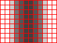 |
En una segunda pasada quizá la sombra quede ya demasiado difuminada. Si trabajáis con una resolución baja de lightmaps con una pasada será suficiente, pero si usáis lightmaps de mayor resolución, más de 64x64, entonces probad con dos pasadas. |
Optimizaciones
Bien, si has llegado hasta aquí ya sabes todo lo que hay que saber sobre la base de los lightmaps :) No obstante, este método es muy básico y es extremadamente lento. Para hacerlo viable, habría que tener en cuenta una serie de optimizaciones.
Tamaño de los lightmaps: Al principio suponíamos un tamaño de los lightmaps de 32x32 píxels. No obstante no es necesario que todos tengan el mismo tamaño, un objeto muy pequeño no tiene por qué tener tanta resolución, con un lightmap de 4x4 le sobraría. Así pues, antes de empezar a calcular nada, no está de mas decidir el tamaño de los lightmaps de cada superficie en función de su tamaño. Se puede hacer en función de un tamaño predefinido, o en relación con los demás objetos.
Alcance de las luces: Al calcular las sombras, no es necesario comprobar las superficies que, debido a la atenuación de la luz, no le afectan. Esto es MUY necesario implementarlo. Una opción rápida de implementar sería crear una bounding box de cada luz y, aprovechando las bounding boxes de las superficies ya creadas, mirar si éstas colisionan o están una dentro de otra. Así crear una lista de caras con las que trabajar, una lista por cada luz.
Uso de estructuras avanzadas: Al calcular las sombras, para calcular la intersección de los rayos con planos, o incluso directamente con las superficies, es recomendable usar algo más avanzado que una simple lista. Por ejemplo, un árbol BSP. Pero eso ya es otra historia...
Exteriores: Normalmente los exteriores están formados por superficies 'suaves', es decir, con una gran cantidad de triángulos, todos dispuestos en ángulos diferentes, pero próximos, para crear sensación suavidad. Por lo tanto, cada una de esas superficies estará formada por un solo triángulo, por lo que si un exterior tiene un numero X de superficies, tendrá un numero X de triángulos, y por tanto un numero X de lightmaps. Como ya hemos dicho anteriormente, aplicar un lightmap a un solo triángulo es malgastar mucha RAM, y como normalmente en los exteriores no habrá sombras, por lo que es recomendable aplicar iluminación por vértice en los exteriores. Un ejemplo de ello serían los exteriores del Quake III: Team Arena.